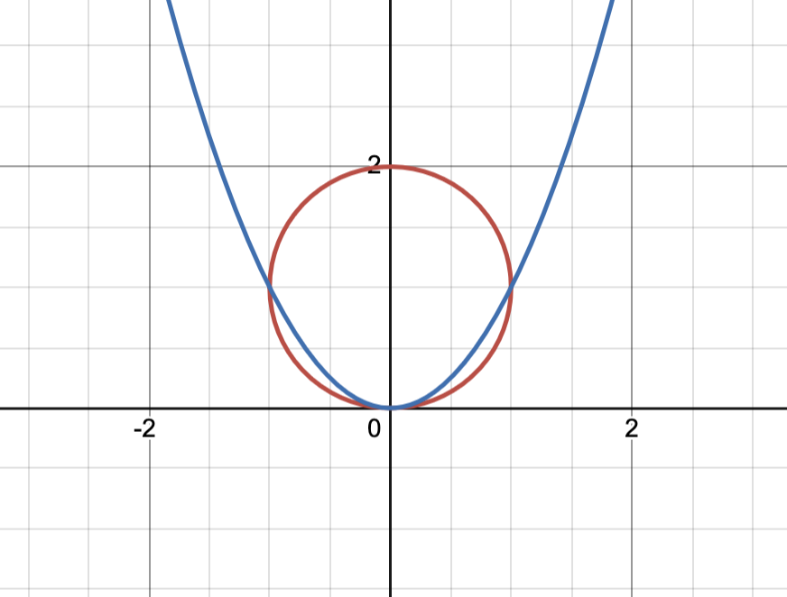

Can an arc of a parabola inside a circle of radius 1 have
a length greater than 4?
\[\text{We can let our parabola be in the form }kx^2\text{ and our circle be }x^2+(y-1)^2=1\]
\[\text{This lets us only have to maniuplate have one variable for }kx^2\text{ and we know that for any }kx^2\text{, the bottom of the parabola is the bottom of the circle}\]
\[\text{Now we can represent the arclength of our parabola with }L=2\int_0^{x_1}{\sqrt{1+k^2x^2}}\,dx\text{, where the parabola intersects the circle at }(x_1,y_1)\]
\[\text{To find }x_1\text{: }x^2+(kx^2-1)^2=1\implies{x^2}+k^2x^4-2kx^2+1=1\implies1+k^2x^2-2k=0\implies{x_1}=\frac{\sqrt{2k+1}}{k}\]
\[\text{To find }y_1\text{: }\frac{y}{k}+(y-1)^2=1\implies\frac{y}{k}+y^2-2y+1=1\implies\frac{1}{k}+y=2\implies{y_0}=\frac{2k-1}{k}\]
\[\text{So }L=2\int_0^{\frac{\sqrt{2k+1}}{k}}{\sqrt{1+k^2x^2}}\,dx\]
\[\text{We can perform a hyperbolic trig sub and evaluate the indefinite integral: }kx=\sinh{t},dx=\frac{\cosh{t}}{k}\,dt\]
\[I=\int{\sqrt{1+k^2x^2}}\,dx=\int{\cosh{t}}\cdot\frac{\cosh{t}}{k}\,dt=\frac{1}{2k}\int{1+\cosh{2t}}\,dt=\frac{1}{2k}\biggl(t+\frac{1}{2}\sinh{2t}\biggr)+C=\frac{1}{2k}\biggl(t+\sinh{t}\cosh{t}\biggr)+C\]
\[\text{Changing bounds: }t_1=\text{arcsinh}\,kx_1\implies{t_1}=\text{arcsinh}\,\sqrt{2k+1}\]
\[\text{So }L=\frac{1}{k}\biggl(\text{arcsinh}\,\sqrt{2k+1}+\sqrt{(2k+1)(2k+2)}\biggr)\]
\[\text{We can try plugging in a few test values of }k:\]
\[k=1:L=\text{arcsinh}\,{3}+\sqrt{12}\text{. Since we know arcsinh}\,x=\ln{\bigl(x+\sqrt{x^2+1}\bigr)},L=\ln{\bigl(3+\sqrt{10}\bigr)}+\sqrt{12}\]
\[\text{Since }e\leq3\leq{3+\sqrt{10}},\ln{\bigl(3+\sqrt{10}\bigr)}\geq1\text{ and since }3^2=9,\sqrt{12}>3\implies{L\rvert_{k=1}>4}\]